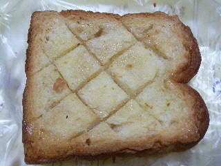
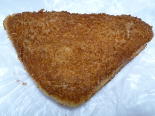
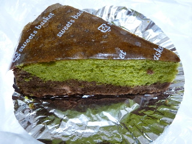
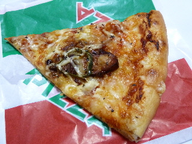
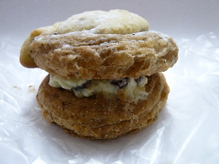
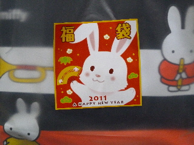
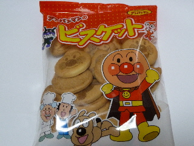

パリクロアッサンのハニートースト
2012/03/12
お店で試食を食べてみたら美味しかったので、買って帰りました。
ハニートーストです。

厚切りで、ザクザクしてて、いい食感がありました。
シンプルに砂糖甘くて、美味しくていいなって思いました。
島根県出雲市大塚町650-1
2012/03/12
お店で試食を食べてみたら美味しかったので、買って帰りました。
ハニートーストです。

厚切りで、ザクザクしてて、いい食感がありました。
シンプルに砂糖甘くて、美味しくていいなって思いました。
2011/11/22
大きいパンは割安な感じがしていいですね。

ハムチーズドーナッツです。
昔ながらの懐かし感じのハムが入っていて、まさに！ハムチーズって感じの商品でした。
久々に「ハム！」って感じのハムを食べた感じでした。
2011/07/26
今日は火曜市ってことで、105円のパンが販売していたんですけど、その中にケーキがありました。

西尾の抹茶とチョコのケーキです。西尾っていうのは愛知県のお茶の産地のようです。
パン屋さんらしく、軽い感じのスポンジケーキでした。
105円でケーキが食べれるのはいいですね。
2011/04/21
今日は帰りが遅くなったので、帰りにゆめタウン出雲で買い物しました。
時間がちょっと遅いのでパンが110円で販売です。

照り焼きチキンのピザです。
甘辛で濃い味でした。真ん中のお肉のところがいいですね。

レーズンとおいしい仲間です。
紅茶味のパンでレーズンバターサンドを作った感じでした。
2011/01/02
パン屋さんの1000円福袋です。
パンを1000円分もいらない？とも思わなくもないですが、お得なセットでしたよ。

フジパンなので、ミッフィーの大きなマイバッグが入っていました。これは色々使えそうです。

フジパン製のお菓子や、食パン引換券も入っていました。慌てて食べなくていいのでいいですね。
パンも何種類か入っていましたが、福袋を持ち歩いて買い物していたため、パンが潰れちゃったので写真のアップはやめました。
ゆめタウン出雲のパン屋さん。